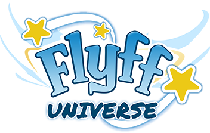
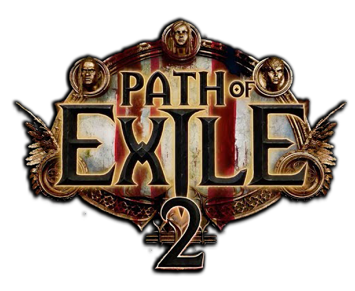
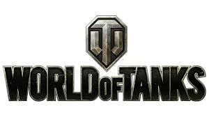

Dota 2

Website: https://www.dota2.com/home
Dota 2 is a 2013 multiplayer online battle arena (MOBA) video game by Valve. The game is a sequel to Defense of the Ancients (DotA), a community-created mod for Blizzard Entertainment's Warcraft III: Reign of Chaos. Dota 2 is played in matches between two teams of five players, with each team occupying and defending their own separate base on the map. Each of the ten players independently controls a character known as a hero that has unique abilities and differing styles of play. During a match, players collect experience points (XP) and items for their heroes to defeat the opposing team's heroes in player versus player (PvP) combat. A team wins by being the first to destroy the other team's Ancient, a large durable structure located in the center of each base.
Development of Dota 2 began in 2009 when IceFrog, lead designer of Defense of the Ancients, was hired by Valve to design a modernized remake in the Source game engine. It was released for Windows, OS X, and Linux via the digital distribution platform Steam in July 2013, following a Windows-only open beta phase that began two years prior. The game is fully free-to-play with no heroes or any other gameplay element needing to be bought or otherwise unlocked. To maintain it, Valve supports the game as a service, selling loot boxes and a battle pass subscription system called Dota Plus that offer non-gameplay altering virtual goods in return, such as hero cosmetics and audio replacement packs. The game was ported to the Source 2 engine in 2015, making it the first game to use it.
Fly For Fun (FLYFF)
Website: https://universe.flyff.com
In December 2002, Aeonsoft developed the first provisional prototype of the game, called Clockworks Ltd. In September 2003, the company changed the game's name to Flyff, and began its first closed beta in Korea. In July 2004, it won the Game of the Month award from the Korean Ministry of Culture, Sports and Tourism. Over the next year, it was launched in three more countries: China, Taiwan, and Thailand. In October 2005, the US received the closed beta, which ran for a month before Flyff was commercially launched in December.
Path Of Exile 2
Website: https://pathofexile2.com
Path of Exile 2 is an action role-playing video game developed and published by Grinding Gear Games. A sequel to Path of Exile (2013), the game was released for Windows PC, PlayStation 5 and Xbox Series X and Series S on December 6 2024 as a paid early access title.
Like its predecessor, Path of Exile 2 is a top-down action role-playing video game. It introduces a new skill system with 240 active skill gems and 200 support gems. There will be twelve character classes that have three ascendancy classes each. New weapons will be introduced such as spears, crossbows and flail, as well as supplementary items like focuses, traps and redesigned scepters. The passive skill tree will have 2000 skills and will allow dual specialization. A dodge roll movement mechanic will be added. Spirit, a resource used to reserve things like auras, will be utilized. Many other changes such as permanent minions, trigger skills, game engine and graphic improvements, and more, will be a part of the sequel.[1][2] After completing the six-act storyline, players will gain access to more than 100 endgame maps with their own boss fight and modifiers that enable revamped versions of many of Path of Exile's past leagues.
War Thunder

Website: https://warthunder.com/en
War Thunder is a 2013 free-to-play vehicular combat multiplayer video game produced by Gaijin Entertainment for Microsoft Windows, macOS, Linux, PlayStation 4, Xbox One, PlayStation 5, Xbox Series X/S, Oculus, and Vive. It was first released in November 2012 as an open beta with a worldwide release in January 2013; it had its official release on December 21, 2016.[12][7] A spinoff game called War Thunder Mobile (also known as War Thunder Edge[13]) was released in 2023 for Android and iOS.
War Thunder is based around combined arms battles on air, land, and sea.[23] Vehicles range from pre-World War I (ships only)[24] to modern day,[25] with an emphasis on World War II,[26][27] the Vietnam War, and the Cold War.[28] Players can control aircraft, ground vehicles, and warships from ten nations with a set of technology trees attached to them: United States, Germany, Russia, Britain, France, Japan, Italy, China, Sweden and Israel. The game also incorporates other nations, including Argentina, Australia, Austria, Bangladesh, Belarus,[29] Belgium, Brazil, Canada, Cuba, Czechoslovakia, Denmark, Egypt, Finland, Greece, Hungary, India, Iran, Ireland, Jordan, Kazakhstan,[29] Kuwait, Lithuania, the Netherlands, North Korea, Norway, Oman, Philippines, Poland, Portugal, Romania, Syria, South Africa, Spain, Switzerland, Turkey, Vietnam (both North and South) and Saudi Arabia. These nations are included either as "sub-trees" (parts of the research trees of bigger nations being dedicated to a smaller nation) or premium vehicles, purchasable with real money or in-game currency.
World Of Tanks
Website: https://worldoftanks.asia/
World of Tanks (WoT) is an armoured warfare-themed multiplayer online game developed by Wargaming, featuring 20th century (1910s–1970s) era combat vehicles.[1] It is built upon a freemium business model where the game is free-to-play, but participants also have the option of paying a fee for use of "premium" features. The focus is on player vs. player gameplay with each player controlling an armored vehicle, from the time of Pre-World War 2 to the Cold War-era.